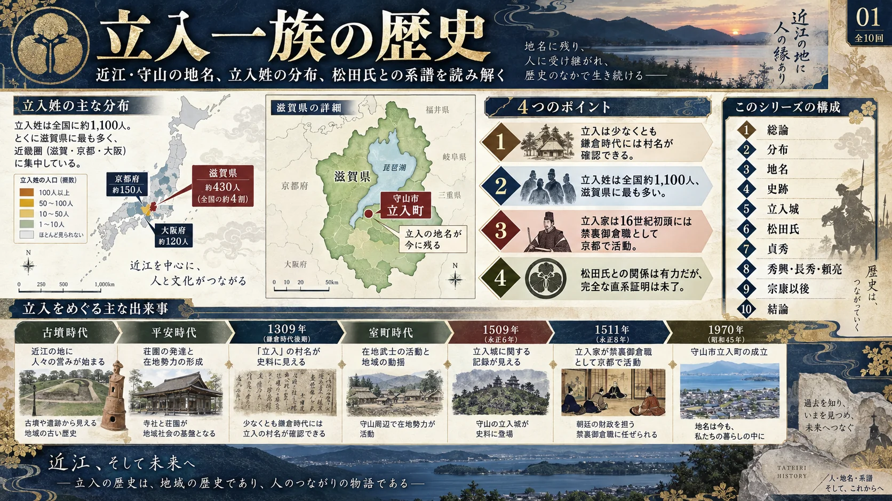
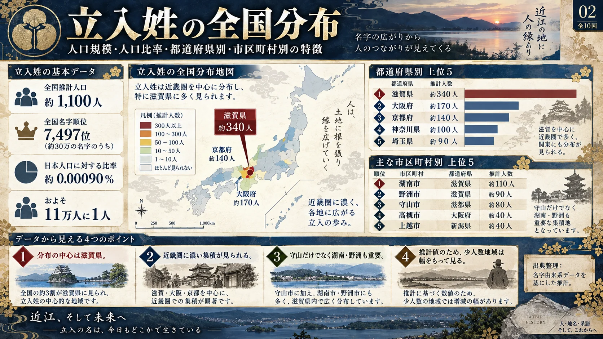
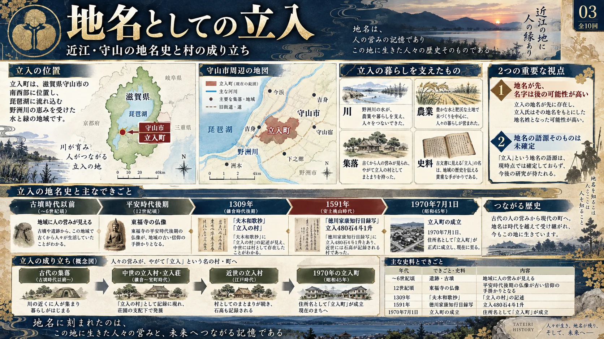
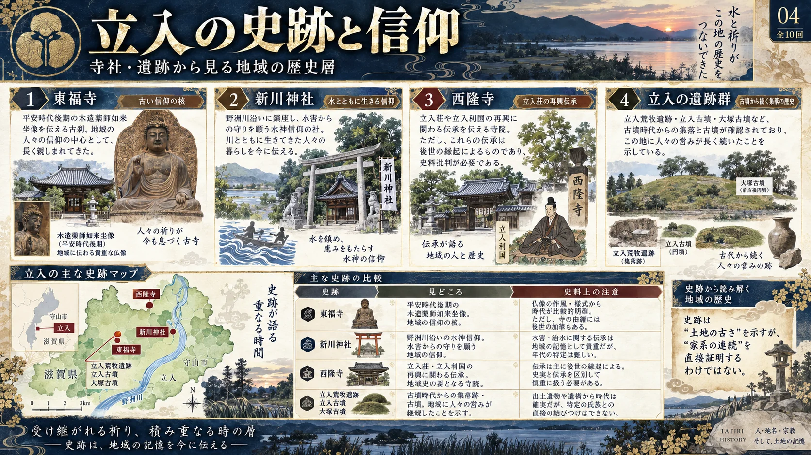
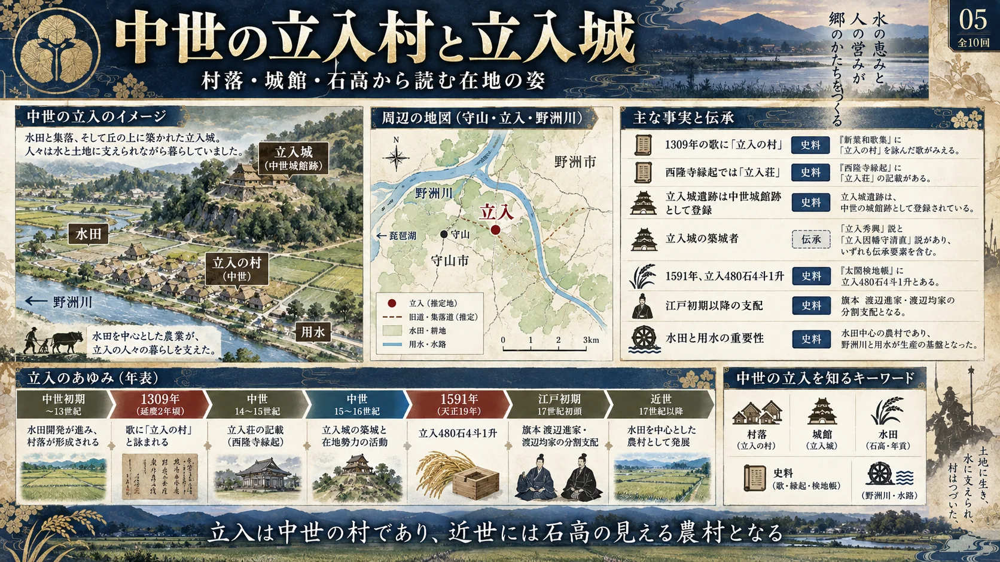
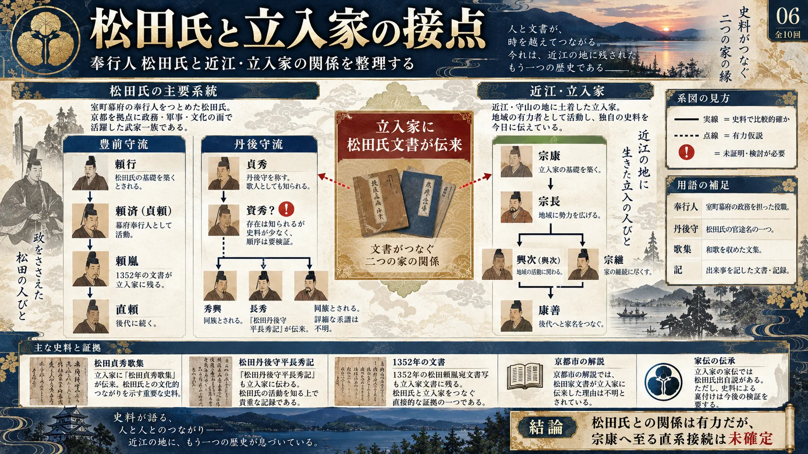
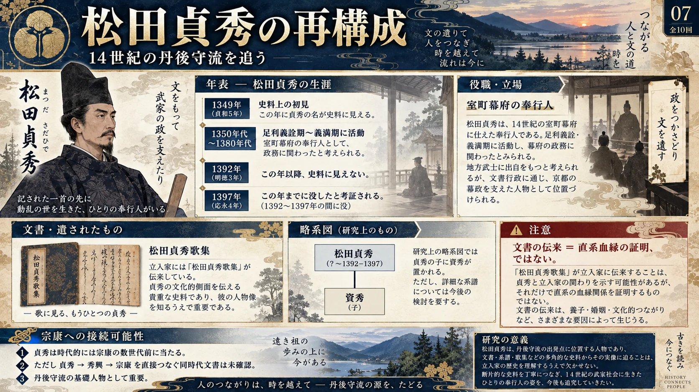
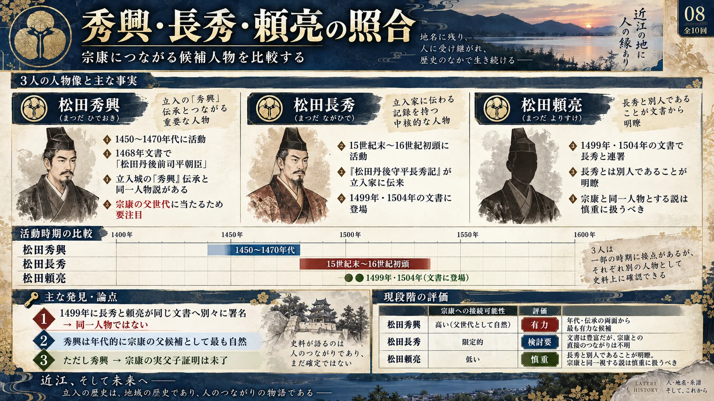
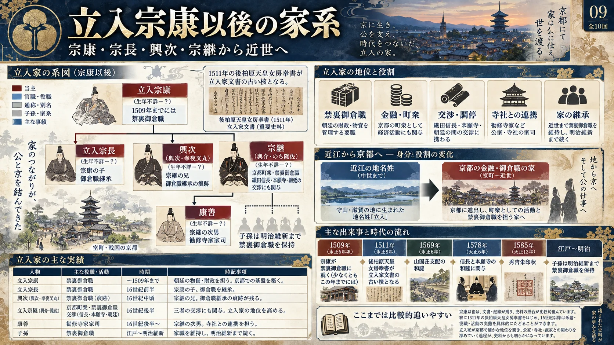
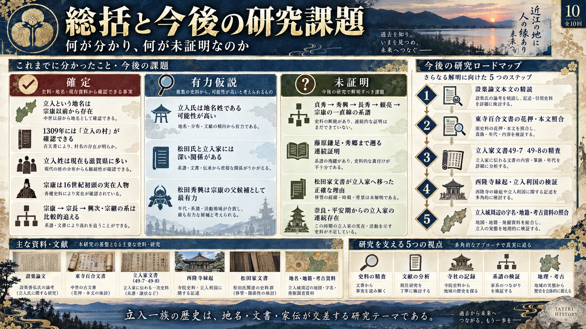

A｜京都・禁裏御倉職立入家宗康以後は史料が豊富
宗康 → 宗長 → 興次・宗継 → 近世の立入家。御倉職の実務縮小後も、勧修寺家に仕える地下官人として明治を迎えました。京都市が伝来文書696点を保管しています。[資料1]
16世紀｜朝廷財政近世｜公家家司1891年｜裔孫「操」1909年｜宗興履歴書
「操」と「宗興」の父子・兄弟関係、宗興の東京転籍は、履歴書・家譜の本文未照合のため確定していません。
滋賀県守山市立入町を起点に、立入姓の分布、中世の立入村・立入城、室町幕府奉行人松田氏、そして禁裏御倉職として京都で活動した立入家までを、確定史料・有力仮説・未証明事項に分けてたどる総合研究ページです。
立入の研究では、①守山の土地としての立入、②立入姓の成立、③京都の禁裏御倉職立入家、④立入家に伝来した松田氏文書、を一度分けて考え、史料によって再接続することが重要です。
宗康以前から存在。少なくとも鎌倉時代には「立入の村」という村名が確認できる。
土地の名「立入」を称した一族が成立したとみるのが自然。ただし名字成立の瞬間を示す同時代文書は未確認。
松田氏との関係を示唆する材料は多いが、宗康の父祖を一直線につなぐ一次史料はまだ不足している。
推計値。少人数地域ほどデータベース間の差が出やすいため、厳密な住民基本台帳人口とは区別して扱います。
立入という土地が先にあり、その土地に関係する在地勢力が「立入」を名字として称したとみるモデルが、現在最も整合的です。
| 史跡 | 歴史上の意味 | 史料上の注意 |
|---|---|---|
| 東福寺 | 平安時代後期の木造薬師如来坐像など、古い地域信仰の核。 | 仏像の制作年代と、現在の村域成立は同一ではない。 |
| 新川神社 | 野洲川沿いの水神信仰、水害・農耕と地域生活の記憶。 | 由緒は伝承と史料を区別する必要がある。 |
| 西隆寺 | 「立入荘」「立入利国」に関する再興伝承を残す。 | 1693年縁起など後世史料に依存する部分がある。 |
| 立入荒牧遺跡・古墳群 | 古墳時代から地域に人の営みが続くことを示す。 | 遺跡の連続性と特定家系の連続性は別問題。 |
鎌倉後期には村名が確認でき、中世から近世にかけて農村として継続したと考えられる。
中世城館遺跡として知られる。築城者は「秀興」説、「立入因幡守清直」説など複数伝承があり、史料批判が必要。
村の生産基盤は水田と用水。野洲川の恵みと洪水への対応が、集落の構造を形作った。
「松田氏文書が立入家に伝来した」こと自体は事実ですが、それだけで直系血縁を証明することはできません。
養子・婚姻・職務継承・文書収集など、複数の伝来経路を検討する必要があります。
禁裏御倉職の家の継承、近江の大溝藩、若狭から江戸へ移った国学者、明治の帝国議会、そして近現代の医学・環境科学・美術史。東京に関わる「立入」の実像を、人物ごとの同時代記録と公的機関の資料に沿って整理します。
宗康 → 宗長 → 興次・宗継 → 近世の立入家。御倉職の実務縮小後も、勧修寺家に仕える地下官人として明治を迎えました。京都市が伝来文書696点を保管しています。[資料1]
「操」と「宗興」の父子・兄弟関係、宗興の東京転籍は、履歴書・家譜の本文未照合のため確定していません。
近江・高島の大溝藩には、江戸の芝愛宕下（後の新橋方面）に上屋敷、白金に下屋敷がありました。立入姓の藩士がいたとする姓氏関係資料はありますが、個別藩士の実名・江戸詰の有無は給人帳との照合が必要です。[資料5]
別姓に「立入」を持つ国学者・伴信友は若狭から江戸へ移りました。伊賀の立入奇一は明治期に東京の帝国議会で活動しました。両者が京都立入家と血縁関係にあったかは未確認です。[資料6][資料8]
明治24年（1891）の顕彰記録
京都・清浄華院の「立入宗継旌忠碑」は1898年の建立。京都市が公開する碑文には、1891年1月に宗継の裔孫「操」へ500円が下賜されたことが記されています。宗継の顕彰を進めた明治期の後裔に関する、氏名の明確な資料です。[資料2]
操の居所、宗興との親子関係、東京への移住は未確認。
1909年履歴書／1913年の実業活動
宮内公文書館には「立入宗興履歴書 明治42年」（識別番号31512）があり、全部利用可能です。京都府の公式年表では、1913年3月、資本金10万円で設立された京都自動車工業株式会社の社長として立入宗興の名が記載されています。[資料3][資料4]
履歴書原本から本籍、住所、父母、転籍歴を照合しない限り「東京へ移住」とは断定できません。
三重県第6区選出の衆議院議員・地方政治史の著述家
1884年に『三重県会沿革集覧』を刊行。1890年の新聞附録には三重県第6区の衆議院議員として肖像が掲載されています。1891年2月16日に北海道炭礦鉄道への補助、1893年2月23日に北里柴三郎が担当した伝染病研究所への補助と設立費の扱いを議会で質問しました。[資料7][資料8][資料9]
東京での議員活動は確認できますが、東京への転籍・定住、京都の立入家との親族関係は未確認。
別姓に「山岸・立入」を持つ国学者
若狭国小浜出身で、養子となったのち江戸に来て勤仕したと人物資料に記されています。古典・神道・言語の考証を行った国学者で、立入という別姓と江戸との実際の接点を示します。[資料6]
「立入」を名乗った正確な時期・理由と禁裏御倉職立入家との接続は不明。
放射線医学者・神経放射線学の組織形成に協力
大阪大学で放射線医学を教え、『放射線医学入門』『診療放射線技術』などを著作・編集。1959年10月には東京・信濃町で日本の神経放射線学の研究組織発足に向けた会合に協力しました。[資料10][資料11]
東京での学術活動は確認できますが、東京の立入家の直系だったという根拠は未確認。
地球システムモデル・気候変動研究者
1999年に東京大学大学院農学生命科学研究科博士課程を修了。JAMSTECで地球システムモデルを研究し、IPCC第7次評価報告書・第1作業部会第9章の統括執筆責任者（CLA）に選ばれています。[資料12]
東京大学での研究経歴は、東京への定住や京都旧家との血縁の証明ではありません。
美術史・博物館研究者
慶應義塾大学で学び、山梨県立美術館の学芸員、2004～2007年の東京純心大学講師を経て、静岡文化芸術大学の教員として活動。ミレー研究、博物館学、染色型紙などの研究業績が確認できます。[資料13]
教育・研究上の東京との関係を示した人物であり、東京居住や旧家の血縁を断定するものではありません。
江戸東京博物館・資料番号90200344–90200346
包紙に「非常装束 元治元年甲子夏 立入氏」と墨書された装束一式が、江戸東京博物館に保存されています。法被・胸当・石帯の組み合わせで、所有家や使用地を追うことが今後の課題です。[資料14]
東京の博物館に収蔵されている事実と、江戸・東京で使われたことは同義ではありません。
上屋敷・下屋敷のピンは現代の概略地域であり、江戸時代の敷地を精密に復元した位置ではありません。現在の国会議事堂は奇一が出席した明治期の議事堂そのものではありません。
地理を確認しながら史跡を追えるよう、主要地点をGoogleマップへ直接リンクしています。
今回の研究内容を10枚のインフォグラフィックとして再構成しました。クリックすると拡大表示します。Web表示には軽量化した高解像度画像を使用しています。










図版はAI生成の参考イメージです。図版内の文字・数値・地図・系譜には誤記があり得ます。正確な記述は本文・出典およびGoogleマップを優先してください。表示している紋様はデザイン上の意匠であり、実際の立入家の家紋を確定するものではありません。